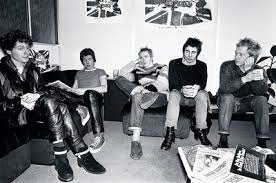

Como surgiu a banda?
O embrião dos Sex Pistols foi uma banda londrina chamada The Strand, formada em 1972 por Steve Jones como vocalista, Paul Cook como baterista e Wally Nightingale como guitarrista. Segundo Jones contaria mais tarde, na época tanto ele quanto Cook tocavam com instrumentos roubados.